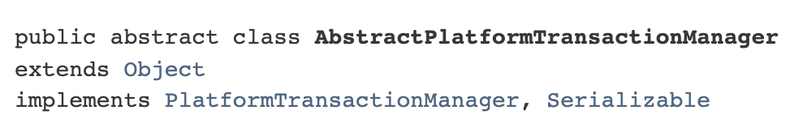
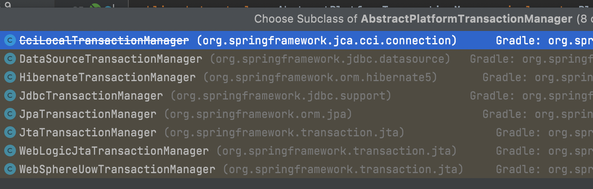
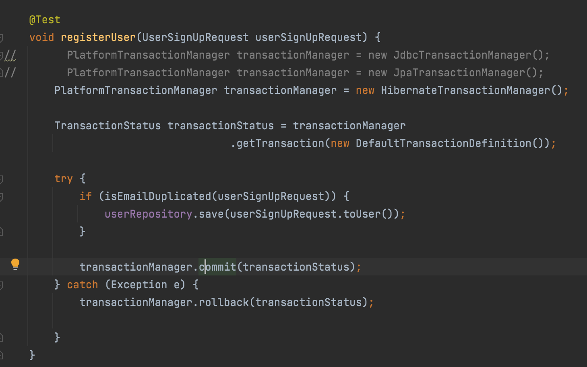

오늘은 제가 트랜잭션에 대해 알아보기 위해 스프링 공식 문서를 참고하면서 알게 된 내용을 정리해 보도록 하겠습니다.
스프링 트랜잭션 추상화 이해하기
스프링은 각 영속성 API(JDBC, JPA, Hibernate)에 종속적인 코드를 이용하지 않고도 일관되게 트랜잭션을 처리할 수 있도록 하는 트랜잭션 추상화 기술을 제공하고 있습니다.
트랜잭션의 추상화 전략은 PlatformTransactionManager 인터페이스에 정의되어 있으며, 다음과 같습니다.
1 | public interface PlatformTransactionManager extends TransactionManager { |
(여기서 상속받고 있는 TransactionManager는 마커 인터페이스(Marker Interface) 입니다.
메서드의 반환값과 매개변수인 TransactionStatus과 TransactionDefinition에 대한 설명은 공식문서를 참고하시기 바랍니다.)
그리고 다음과 같이, PlatformTransactionManager 를 AbstractPlatformTransactionManager 라는 추상 클래스가 구현하고 있습니다.

그리고 마지막으로 가장 중요한 부분인데요, AbstractPlatformTransactionManager 는 다음과 같이 여러 클래스에서 상속받아 재정의(Override)되고 있습니다.

다음과 같이 사용 예제를 만들어 보았습니다.

이로써 우리는 각각의 기술들이 어떻게 트랜잭션을 처리해 줘야 하는지 신경 쓸 필요가 없게 되었습니다.
어떤 영속성 API를 사용하던, 위의 예제처럼 인터페이스의 구현체만 갈아 끼워주면 해당하는 API에 맞게 스프링의 트랜잭션 기술을 사용할 수 있는 것입니다.